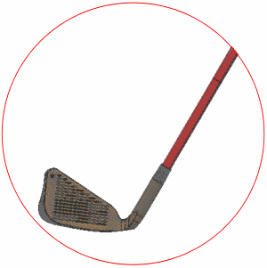

Move the shaft mesh
All meshes assigned to a collector inherit the properties of the collector. When you reassign a mesh from one collector to another, the properties of the mesh automatically change to that of the new collector.
 Simulation Navigator
Simulation Navigator
-

 2D Collectors (expand)
2D Collectors (expand)
-
Shaft steel (expand)
-
 2d_mesh(1) and drag it from Shaft steel to the Shaft graphite node.
2d_mesh(1) and drag it from Shaft steel to the Shaft graphite node.
-
ESC
Note
Pressing ESC clears the selection color.
 Save (Quick Access toolbar)
Save (Quick Access toolbar)
You can zoom in to see that the color of the shaft has changed to red, which is the display color of the Shaft graphite collector.
-

You can also examine the Simulation Navigator to see that the shaft mesh is now assigned to the Shaft graphite collector.
|
|